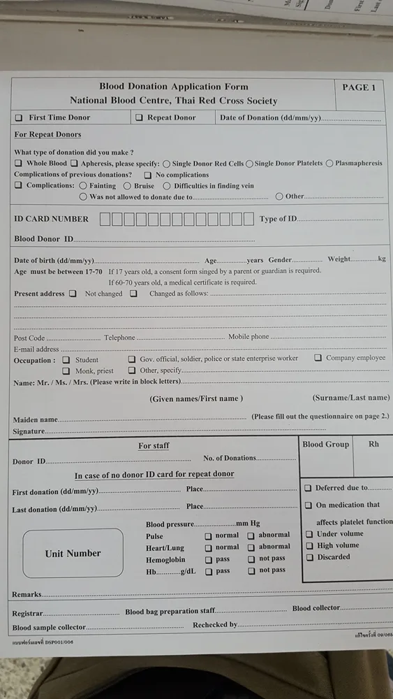

Overview
Just follow these steps and photos to walk you through the process at the main donation center on the map.
Chiang Mai Ambassador
The Blood Donation Procedure is quite simple, here is a basic video to help you through. Below are some photos with more in depth information. Sometimes tourists and short term visitors may not be able to donate blood.
Just follow these steps and photos to walk you through the process at the main donation center on the map.

Walk past this building and down to the entrance below.
When you enter you will be somewhere near here. So head over to the red sign and find your forms.
Here are the forms you need, just kept in the right hand side of these two receptacles. Complete both sides and move to the next section where you will be registered into the system and do the pre-check.
After registration you will have a quick interview with a nurse in area 4, your answers will be checked again and you will have the finger prick test to see if you have any blood to give. After this, please grab another glass or two of water.
Here comes the fun part of the whole blood donation procedure. It’s the useful and semi scary part of your donation, however, the lovely staff will assist you and try and make having a needle jammed into you not so painful or stressful. You get to choose which arm you will use and you get a nice comfortable chair for your 10 minute donation.
The nurses will simply do their thing and you will be entertained by the great TV soaps being shown or by watching all the other legends donating as well. After 5-10 minutes they will have collected 450mls, which is under 10 percent of your total blood amount. Don’t worry they can’t over collect so you will be OK.

Thanks heaps for completing your donation today. You are a hero! Just be careful as you first stand up, please take your time as you have donated and you may be a little lighter on your feet.
You will now carefully make your way across to the rest and recovery area, where you can grab a cold drink, a snack and whatever else they have available that day. After donations, please look after yourself and watch out that you do not do any heavy lifting or strenuous exercise will your donation arm as bruising may occur.
Red Cross Blood Bank Chiang Mai The Red Cross Blood Bank Chiang Mai is conveniently located close to the center of the Old City of Chiang Mai in northern Thailand. You can help save lives! The Red Cross Blood Bank Donation Center in the Old City is open EVERY DAY for receiving your donation. If you…

The BEST Chiang Mai Resource Links Chiang Mai is an awesome place and you will come to understand that very quickly. These best Chiang Mai resource links will give you lots of great information about Chiang Mai and will get you connected to the people that will help you in daily life. Slowly I will be sectioning…
Chiang Mai Insurance – need it, want it, use it? Do you understand your health or vehicle insurance options? For me, insurance brings peace of mind, but is it worth it? Insurance gives security, insurance helps when you need it most. When you are in trouble, when you get into an accident, with insurance, you…
Live in Chiang Mai Chiang Mai is a fantastic place to visit, but to live in Chiang Mai is so much better. Why? Well there are just so many reasons – The lifestyle, Chiang Mai is know for being an easy going place with most of the modern creature comforts, just around the corner and everything…
Lost or Stolen License Plates I lost my license plates. So, this is the procedure to get replacement license plates. First, go and file a report at the local police station. It takes about 10 minutes if you can speak Thai. If you can’t speak Thai take photos. 20 baht. Motorbike license plates – Cars…
Motorcycle Rentals Automatic 110cc and 125cc motorcycle rentals are capable of carrying two people are the easiest to jump on and ride away with if you don’t have riding experience. A valid international driver’s licence isn’t required to rent, but you may have to leave your passport, or at least a copy and maybe 1000-5000…
Red Cross Blood Bank Chiang Mai The Red Cross Blood Bank Chiang Mai is conveniently located close to the center of the Old City of Chiang Mai in northern Thailand. You can help save lives! The Red Cross Blood Bank Donation Center in the Old City is open EVERY DAY for receiving your donation. If you…
The BEST Chiang Mai Resource Links Chiang Mai is an awesome place and you will come to understand that very quickly. These best Chiang Mai resource links will give you lots of great information about Chiang Mai and will get you connected to the people that will help you in daily life. Slowly I will be sectioning…
Chiang Mai Insurance – need it, want it, use it? Do you understand your health or vehicle insurance options? For me, insurance brings peace of mind, but is it worth it? Insurance gives security, insurance helps when you need it most. When you are in trouble, when you get into an accident, with insurance, you…
Live in Chiang Mai Chiang Mai is a fantastic place to visit, but to live in Chiang Mai is so much better. Why? Well there are just so many reasons – The lifestyle, Chiang Mai is know for being an easy going place with most of the modern creature comforts, just around the corner and everything…
Lost or Stolen License Plates I lost my license plates. So, this is the procedure to get replacement license plates. First, go and file a report at the local police station. It takes about 10 minutes if you can speak Thai. If you can’t speak Thai take photos. 20 baht. Motorbike license plates – Cars…
Motorcycle Rentals Automatic 110cc and 125cc motorcycle rentals are capable of carrying two people are the easiest to jump on and ride away with if you don’t have riding experience. A valid international driver’s licence isn’t required to rent, but you may have to leave your passport, or at least a copy and maybe 1000-5000…
Red Cross Blood Bank Chiang Mai The Red Cross Blood Bank Chiang Mai is conveniently located close to the center of the Old City of Chiang Mai in northern Thailand. You can help save lives! The Red Cross Blood Bank Donation Center in the Old City is open EVERY DAY for receiving your donation. If you…
The BEST Chiang Mai Resource Links Chiang Mai is an awesome place and you will come to understand that very quickly. These best Chiang Mai resource links will give you lots of great information about Chiang Mai and will get you connected to the people that will help you in daily life. Slowly I will be sectioning…
Chiang Mai Insurance – need it, want it, use it? Do you understand your health or vehicle insurance options? For me, insurance brings peace of mind, but is it worth it? Insurance gives security, insurance helps when you need it most. When you are in trouble, when you get into an accident, with insurance, you…
Live in Chiang Mai Chiang Mai is a fantastic place to visit, but to live in Chiang Mai is so much better. Why? Well there are just so many reasons – The lifestyle, Chiang Mai is know for being an easy going place with most of the modern creature comforts, just around the corner and everything…
Lost or Stolen License Plates I lost my license plates. So, this is the procedure to get replacement license plates. First, go and file a report at the local police station. It takes about 10 minutes if you can speak Thai. If you can’t speak Thai take photos. 20 baht. Motorbike license plates – Cars…
Motorcycle Rentals Automatic 110cc and 125cc motorcycle rentals are capable of carrying two people are the easiest to jump on and ride away with if you don’t have riding experience. A valid international driver’s licence isn’t required to rent, but you may have to leave your passport, or at least a copy and maybe 1000-5000…
© 2026 Chiang Mai Ambassador
Key Takeaways
Chiang Mai Ambassador